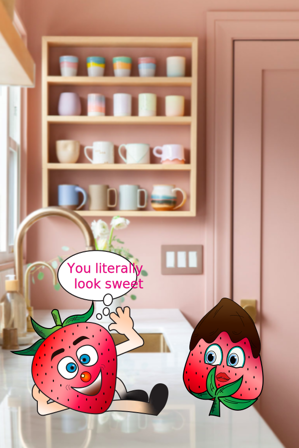

Home | Photoshop | Illustration | Animation | Print Layout | Contact

Adobe Illustration is my favorite program so far. It is simple, efficient and very “smooth”, especially for someone who is interested in creating logos. For this project I used a pixelated background and drew all elements from the scratch. Due to my lack of experience I had trouble making my objects look 3D. I used the Gradient tool to add multiple colors to decrease flatness.